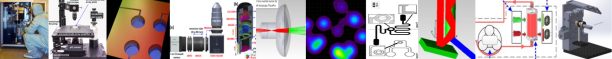
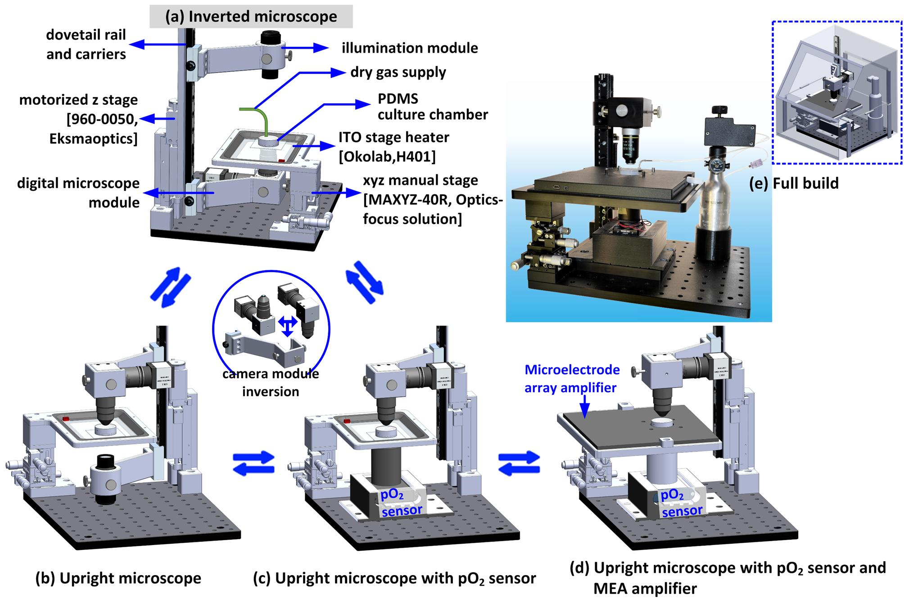
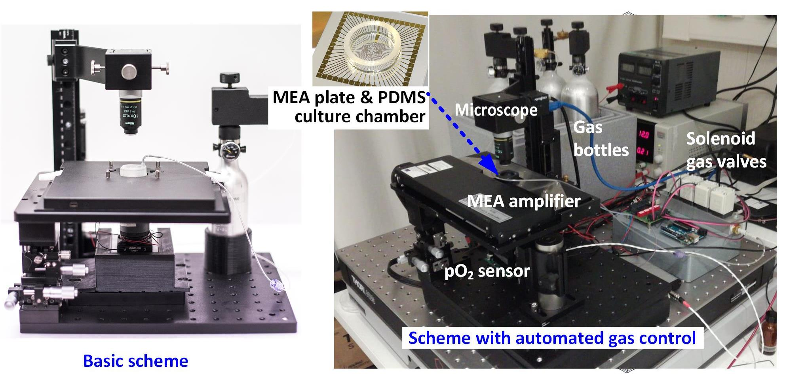
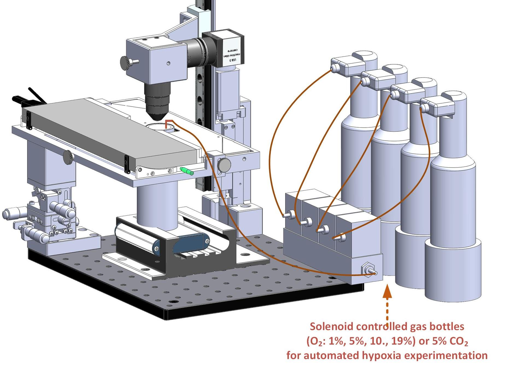
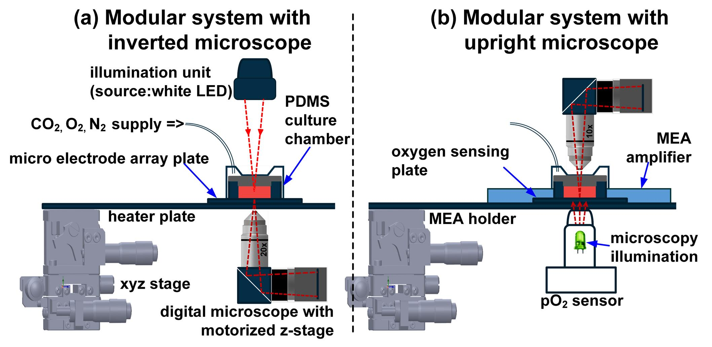

Optics and Biomedical engineering
Software development
Publications


Design and assembly of iuCMP - An invert-upright microscope interchangeable modular cell culturing platform
Modular system in different configurations. Microscope assembly for (a) inverted configuration and (b) upright configuration. (c) Upright configuration with oxygen sensor. (d) Upright configuration with MEA amplifier (MEA1060-Up, Multichannel System) and oxygen sensor. (e) Original photograph of the final assembly.
Graphical abstract

Upright microscopy with pO2 (oxygen) sensing and electrophysiological recording (MEA1060-Up amplifier, Multichannel Systems).

Experimental setup for cardiac ischemia on-a-chip; effects of hypoxia on the functionality of the induced pluripotent stem cell-derived cardiomyocytes (Manuscript under preparation)
Article link
Micro- and Nanosystems Group
Modular microscopy schematic arrangement for (a) inverted microscopy and (b) upright microscopy with optical fluorometric oxygen sensor and MEA amplifier.
Cardiac hypoxia response experimental setup
Cardiac ischemia on-a-chip setup

Modular microscopy schematic arrangement